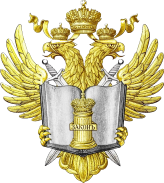
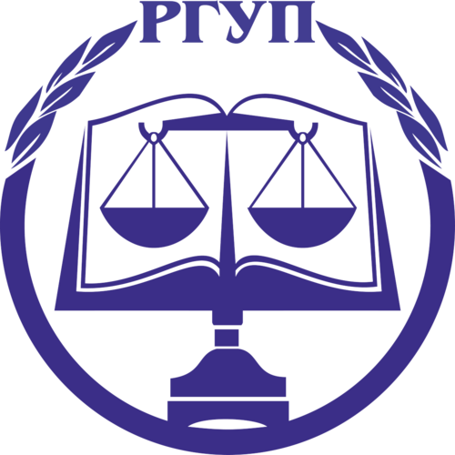
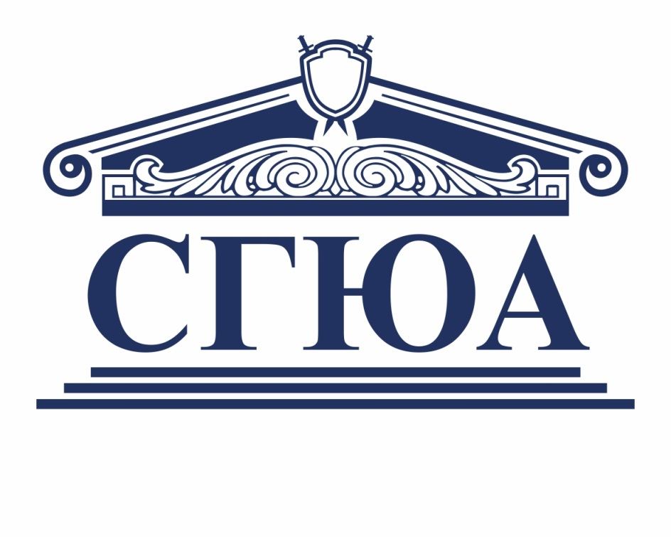
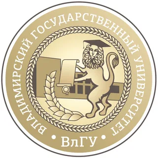
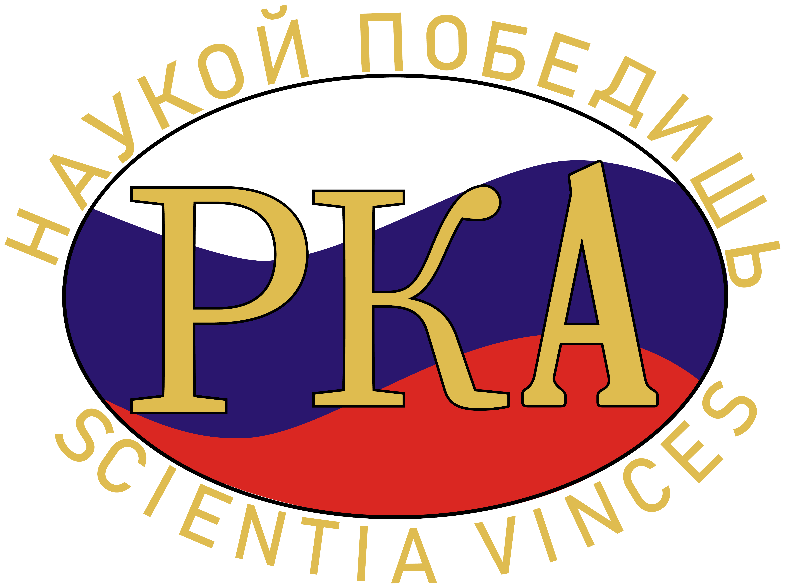

Информационное письмо
Преступность и безопасность в регионах России: общее и особенное
Всероссийская научно-практическая конференция, приуроченная к 35-летней годовщине образования Общероссийской общественной организации «Российская криминологическая ассоциация имени Азалии Ивановны Долговой» и Году единства народов России.
Уважаемые коллеги!
Университет прокуратуры Российской Федерации, Российский государственный университет правосудия имени В. М. Лебедева, Саратовская государственная юридическая академия, Владимирский государственный университет имени Александра Григорьевича и Николая Григорьевича Столетовых, Общероссийская общественная организация «Российская криминологическая ассоциация имени Азалии Ивановны Долговой» и Содружество выпускников Аспирантуры ВШ КГБ СССР и Адъюнктуры Академии ФСБ России 24–25 сентября 2026 года проводят Всероссийскую научно-практическую конференцию «Преступность и безопасность в регионах России: общее и особенное», приуроченную к 35-летию «РКА им. А.И. Долговой» и Году единства народов России.
Два дня конференции
35 лет «РКА им. А.И. Долговой»Организаторы





- Университет прокуратуры Российской Федерации
- Российский государственный университет правосудия имени В. М. Лебедева
- Саратовская государственная юридическая академия
- Владимирский государственный университет имени А. Г. и Н. Г. Столетовых
- Общероссийская общественная организация «Российская криминологическая ассоциация имени Азалии Ивановны Долговой»
- Содружество выпускников Аспирантуры ВШ КГБ СССР и Адъюнктуры Академии ФСБ России
Основные вопросы конференции
- Основные тенденции современной преступности, угрозы и вызовы национальной безопасности с учетом изменяющейся социально-правовой и геополитической реальности.
- Региональный опыт противодействия преступности, терроризму и экстремизму, обмен лучшими практиками.
- Укрепление взаимодействия научного и профессионального сообщества в сфере противодействия преступности и обеспечения национальной безопасности.
- Направления совершенствования мер противодействия современным видам преступности.
- Оптимизация мер, направленных на профилактику преступности, терроризма и экстремизма, обеспечение национальной безопасности.
Участие и публикация
К участию приглашаются научные и педагогические работники научных и образовательных организаций, практические работники правоохранительных и судебных органов, экспертных учреждений, докторанты, аспиранты и адъюнкты. Студенты к участию и к публикации не допускаются.
Требования к тезисам
- Шрифт: 14; интервал: 1,5; поля: 2 см со всех сторон.
- Структура: аннотация 2–3 предложения и ключевые слова 5–6 слов или словосочетаний.
- Сноски: автоматические подстрочные постраничные.
- Объем: до 0,5 п. л., до 8 страниц.
- Оригинальность: не менее 70%, включая цитирование и самоцитирование.
Медиа к 35-летию
Хроника ассоциации и будущей конференции
Пакет документов
Ниже размещены актуальные документы для участников конференции: информационное письмо с анкетой-заявкой и анонс. Ссылка ВКС будет заблаговременно направлена зарегистрированным участникам на электронную почту.
Место проведения
Москва, ул. Новочеремушкинская, д. 69
Начало работы конференции — 10:00 по московскому времени. Для дистанционных участников организационная информация и ссылка ВКС будут заблаговременно направляться оргкомитетом по электронной почте.
Открыть маршрут в Яндекс.Картах